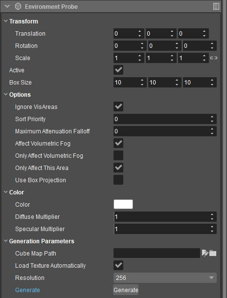

Overview
Topics
With Environment Probes you have the ability to place cubemaps easily throughout a level just as you would with a light. It is very useful especially with reflective materials because it will automatically assign the cubemap to anything within its radius.
This tool can be useful when used with dynamic lighting as well; it just requires a minor Flow Graph setup so that the different probes used in different situations will transition smoothly.
With the introduction of Physically Based Shading, cubemaps control many things in the engine. Everything from shadow colors, ambient diffuse values, particle diffuse, and reflections. They act as bounce lighting by taking the colors from the surroundings and applying them directly into the diffuse of materials inside their radius.
Setup
Having loaded a level in Sandbox, select the Environment Probe entity from the Create Object → Components → Light list. Make sure it's placed in the horizontal center of your heightmap.
After selecting the Environment Probe, move your cursor into the view port to position and place it into your level. You can adjust the location as the same as with any entity.
With the new tile shading in CRYENGINE, all cubemaps must be at resolution of 256. The image generated is a floating point HDR image and has a much higher fidelity than before.
Cubemap Generation
The texture file name will always be the name of the Environment Probe entity. So it is a good idea to name your probe before you start generating a cubemap.
On the Properties panel, you see the entity options and 'Generation Parameters' section. Click the Generate button to generate a cubemap. When you generate a cubemap, you will get get 2 textures. One will be the diffuse bounce lighting information and the other is the reflection map. This will generate a Tif cubemap image in: Textures\cubemaps\<LevelDirectory>\<EnvironmentProbeName_cm>.tif
Generally, the environment probe should be placed at the head height to generate proper reflections.
Global Cubemap Probes
Every level should have a global cubemap to start with. This is a special cubemap that acts as the default/fallback. Generally you only need one global cube map per level.
Having a global probe in your level ensures that you will always have an active cubemap available. Any local probes will automatically sort as a higher priority within its defined radius and blend in over the top of the global probe.
Setting a cubemap as a global cubemap requires a few special settings. The following settings can be found on the Properties panel, when an Environment Probe is selected:
- Ensure that it covers the entire level by setting the Box Size values high enough.
- Set the Sort Priority to 0.
- Set Maximum Attenuation Falloff to 0.
- Set Ignore VisAreas to true.

For more information about Environment Probe options, please refer to the Light Components documentation .
Tweaking Environment Probes
High reflective materials are suggested to be used in conjunction with SSR (Screen Space Reflections) as it will provide localized real-time reflections.
No SSR and no Environment Probe
The following example was put together using a box projection method SSR with Environment Probe. Notice how the grid is accurately aligned with the shapes. When modifying your box projection be aware that a bounding green bounding box appears and to tweak the size accordingly.
SSR with Environment Probe
This screen has SSR with no Environment Probe enabled. Notice the localized reflections located around edges and corners.
SSR with no Environment Probe
No SSR with Box Project enabled Environment Probe aligned with the size of the room.
No SSR with Box Project enabled Environment Probe
SSR with spherical Environment Probe. This aspect is not as accurate but in less reflective areas this option may be easier to use.
SSR with spherical Environment Probe
For more information about Environment Probes and how to use them efficiently in your level, please refer to the following tutorials: